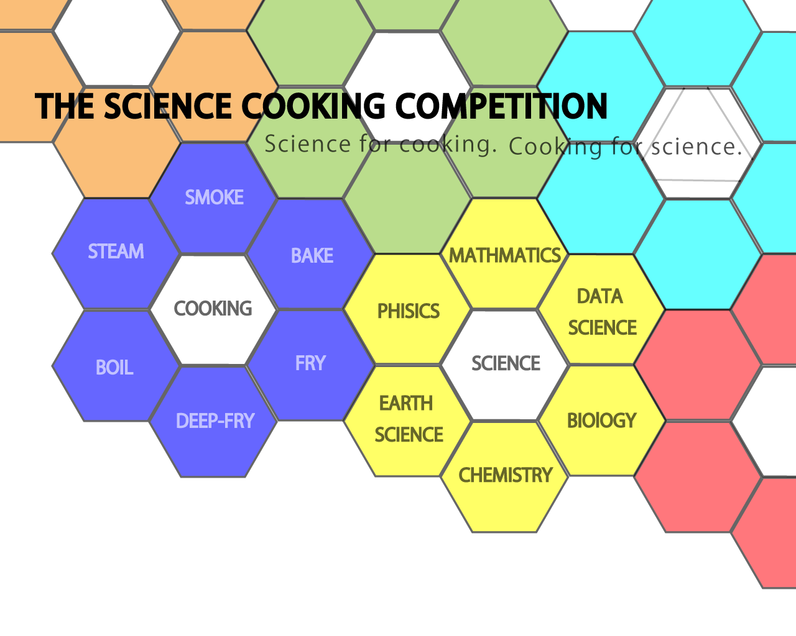

Information ~概要~
- 日時 8月19日17時~22時頃まで
- 場所 Eco-blight 201
- レギュレーション
- 完成した料理もしくは、下処理した材料を持ち寄ること。
材料を持ってくる場合は 30分程度で料理完成まで至らせること。
- 事前に論文を紙媒体もしくは電子データにて作成し、当日まで提出すること。
論文の内容は自分の料理に関するもので、A4二枚程度とする。
- 材料費や論文に関する費用は補助できる場合があるのでレシートなども可能な限り提出すること
- 試食した者で各要素10点満点の以下の基準で採点を行う。
- 味
- 見た目
- 論文の内容
- 科学を感じるか
採点したものを集計し平均したものを点数にする。
- 最優秀者には賞品と「理系料理王」の称号が贈呈される。
- その他の注意点
- コンペティション終了後、レクリエーションがあるかもしれません。
- 大会事務局は皆様の時間内かつ安全な帰宅に努めます。